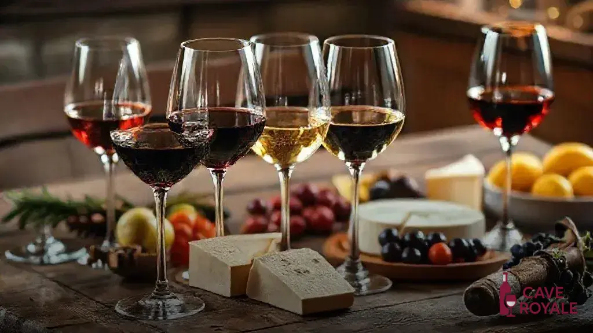

Tradição que atravessa gerações
A Vinharia Agnello nasceu do sonho de uma família apaixonada por vinhos e pela arte de reunir pessoas. Tudo começou com pequenas produções artesanais, feitas com dedicação e respeito às tradições. Com o passar dos anos, a paixão cresceu e se transformou em um negócio sólido, sem nunca perder a essência: oferecer vinhos de qualidade e momentos inesquecíveis.
